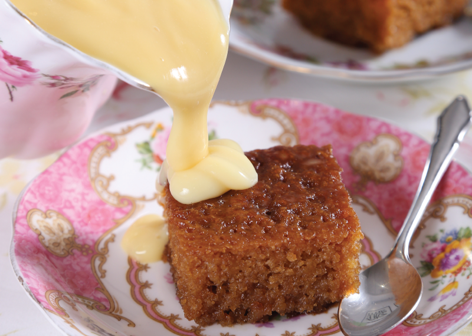

Malva Pudding Recipe

Description
Malva pudding, as I mentioned above, is a hugely popular dessert from South Africa that is somewhat similar to a tres leches cake.
It all starts with a wonderful spongy cake, flavored with apricot jam, that bakes until the exterior becomes somewhat caramelized.
Then, after poking holes throughout the sponge, a mixture of heavy cream, milk, butter, sugar, and salt, is poured over the
pudding. The textures of the caramelized exterior, spongy center, and delicious creamy liquid are out of this world!
Ingredients
Cake
- ¾ cup (6floz/170ml) whole milk
- ½ cup (3oz/85g) dark brown sugar
- 2 large eggs
- 3 tablespoons apricot jam, strained
- 2 tablespoons (1oz/30g) butter, melted
- 1 teaspoon apple cider vinegar
- 1½ cups (7½oz/213g) all-purpose flour
- 2 teaspoons baking powder
- 1 teaspoon baking soda
- a pinch of salt
Sauce
- ½ cup (4floz/115ml) heavy cream
- ½ cup (4floz/115ml) whole milk
- ½ cup (4oz/115g) butter
- ½ cup (4oz/115g) sugar
- ¼ teaspoon salt
Steps:
- Preheat the oven to 350°F (180°C) and butter an 8-inch (20cm) square baking dish
- In a medium mixing bowl, whisk the milk, brown sugar, eggs, apricot jam, melted butter, and vinegar until fully combined
- In another bowl, whisk together the flour, baking powder, baking soda and salt, and then combine with the wet ingredients until
thoroughly combined
- Pour into the prepared baking pan and bake for 30-40 minutes, until a knife inserted in the center comes out clean
- Just before the pudding is done, make the sauce: in a saucepan over medium heat combine the cream, milk, butter, sugar, and salt and heat until the butter is melted and the sugar is dissolved
- Once the pudding is done, poke holes all over the hot pudding with a skewer and then pour the warm sauce over the pudding. Allow resting for a minimum of 30 minutes
- Serve warm with a scoop of vanilla ice cream. Store leftover pudding in the refrigerator in an airtight container for up to 3 days. Reheat before serving, either in a 300°F (150°C) oven or in the microwave